刘东毅的区块链与数字货币课程实验一
Name: 刘东毅 | Student ID: 2023311672
1. 基础知识介绍
高性能图数据库TuGraph由蚂蚁集团和清华大学共同研发，历经蚂蚁50万核图计算集群和300+实际业务场景锤炼，在国际图数据库基准测试中多次获得性能第一。TuGraph是一个支持大数据容量、低延迟查找和快读图分析功能的高效图数据库，包含图存储、图计算、图学习、图研发平台的完善的图技术体系，拥有业界领先规模的图集群，解决了图数据分析面临的大数据量、高吞吐率和低延迟等重大挑战。
2. 准备工作
开始前，登录阿里云服务，注册个人账户，在服务目录中找到tugraph项目，申请试用，成功后找到我的试用服务实例，点开详情，即如图：
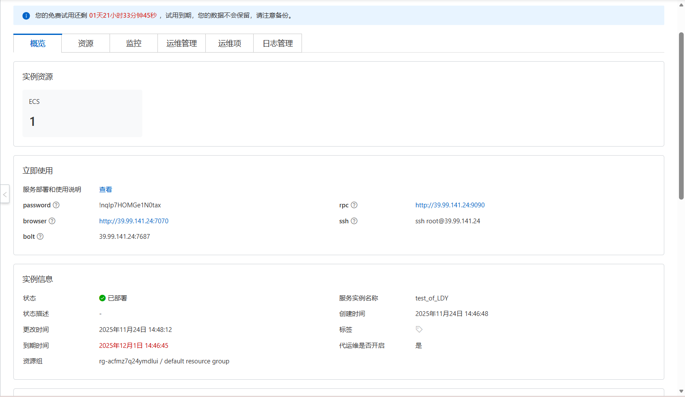服务实例详情（已过试用期）
点击browser直接进入云服务台，输入bolt与账户admin和随机密码，进入图项目，新建图项目实验一：
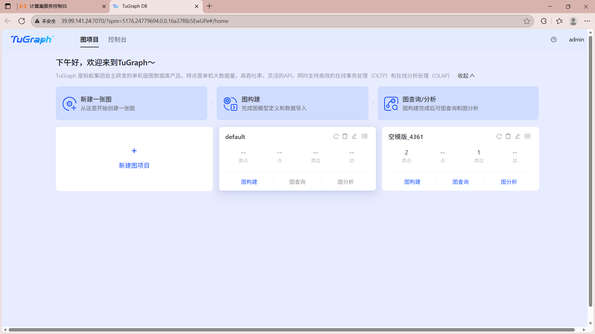 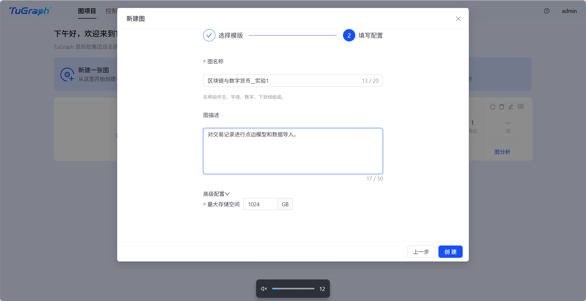建立项目实验一
建立模型，建立点和边：
 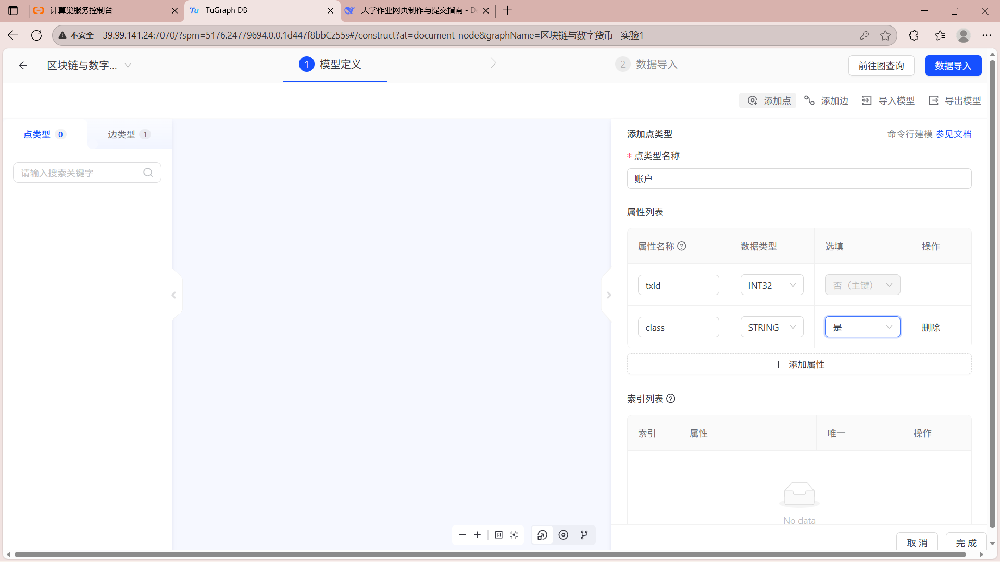
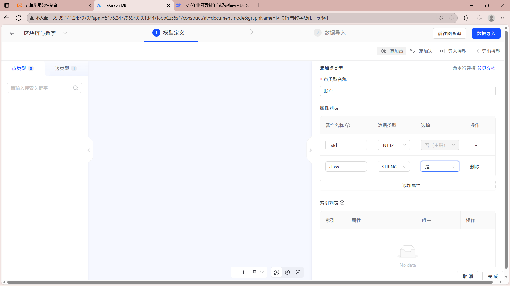
导入数据：
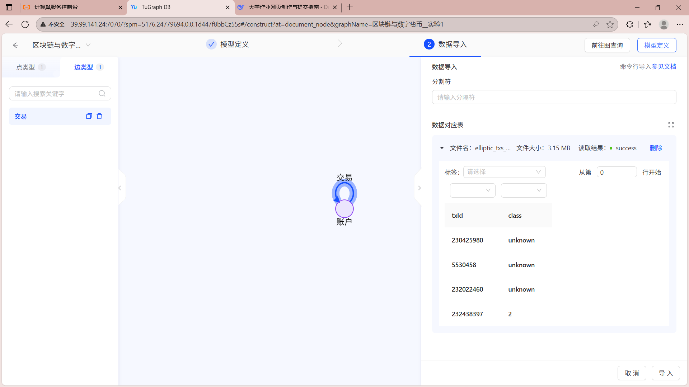成功建立后，进行简单查询，对特定账户查询，用于需要对特定账户的交易情况进行状况查询：
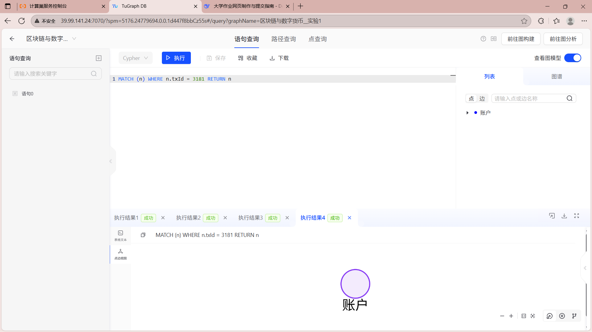尝试建立新的点，用于快速向数据库中加入新的账户（在返回查询新的点时发生错误）：

复杂查询，查询所有账户的总数量：
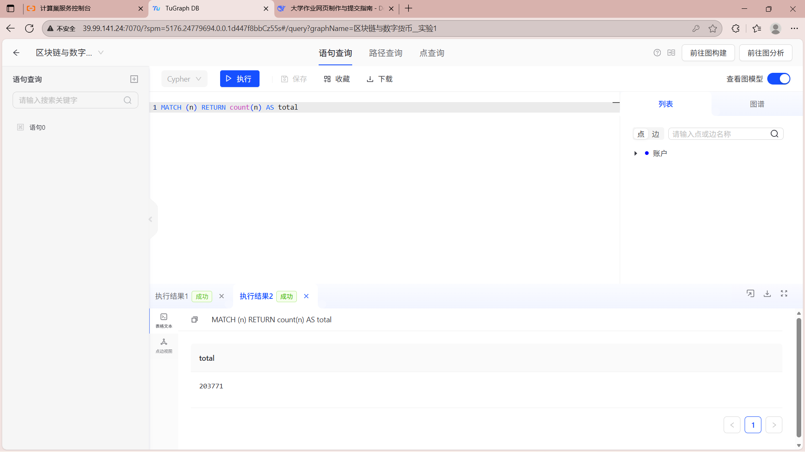接下来建立了一个新的项目尝试用第二种方法建立模型，将账户和交易都以点的形式建模，以账户>交易、交易>账户的形式建立边：
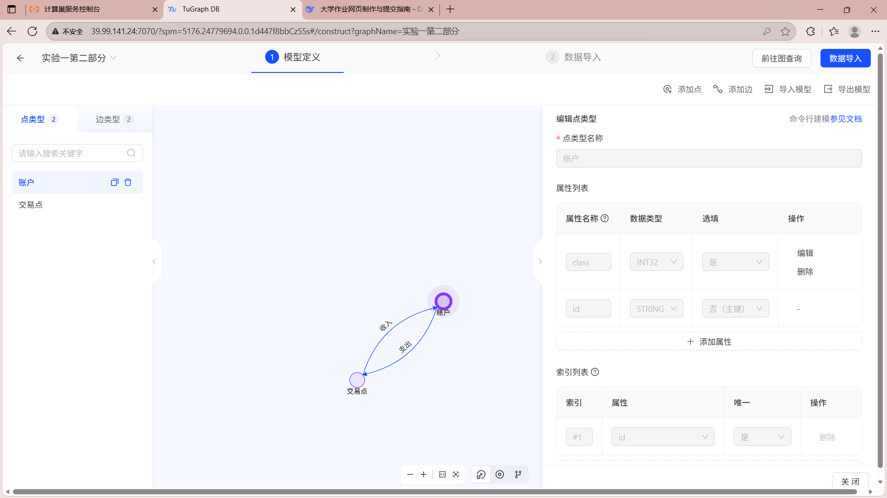导入数据，由于学习通作业中，只提供了txt文件，同时电脑上没有合适的方式登录GitHub以获得数据，我在deepseek的帮助下用python将其转化为csv文件：
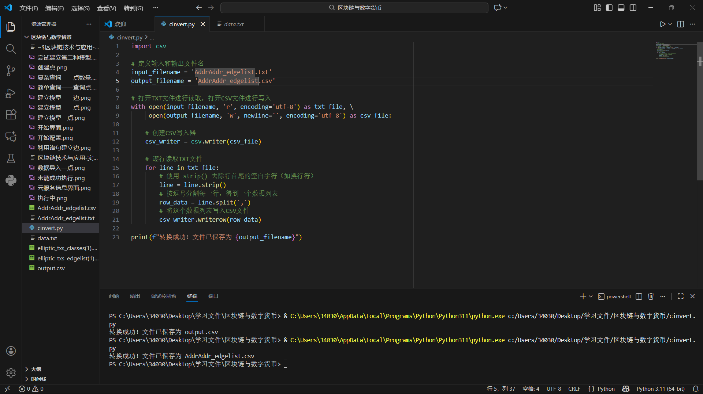由于没有边的有关文件，我尝试用cypher语句建立新的边，但是可能由于语句不正确或者数据量太大，没能成功生成。 之后我尝试以自己的理解修改了查询语句，但是依旧一直在进程中没有正常生成：
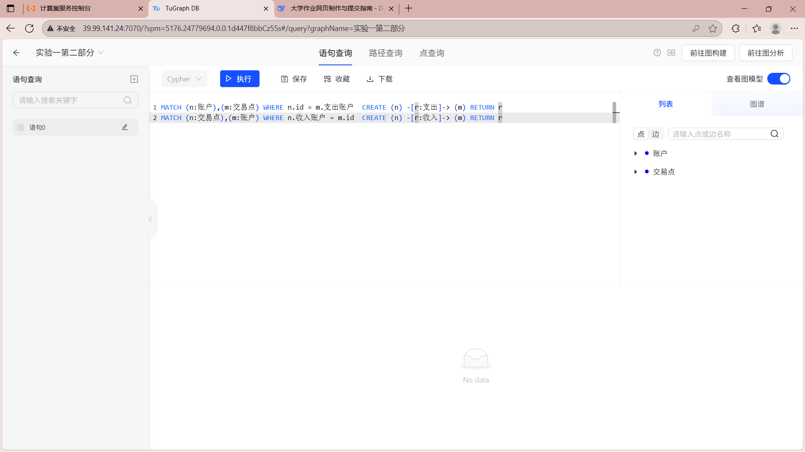 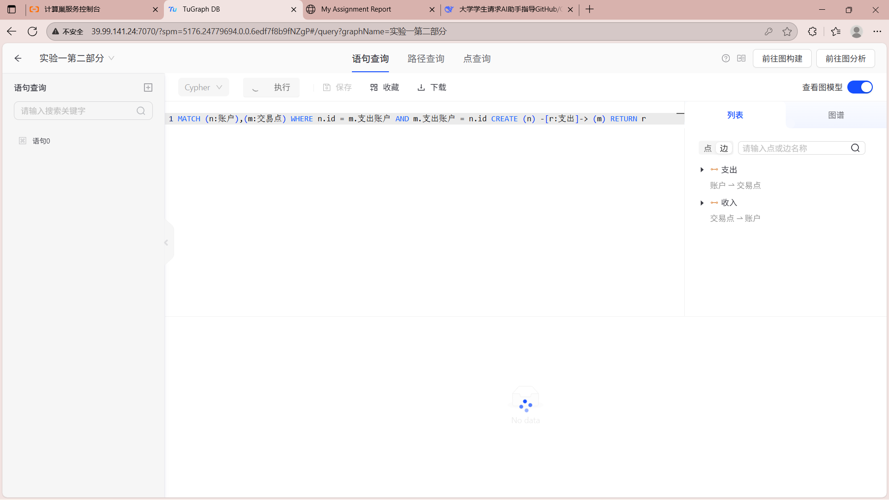 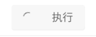一直在转圈圈
最后建立了一个网页用于提交作业。
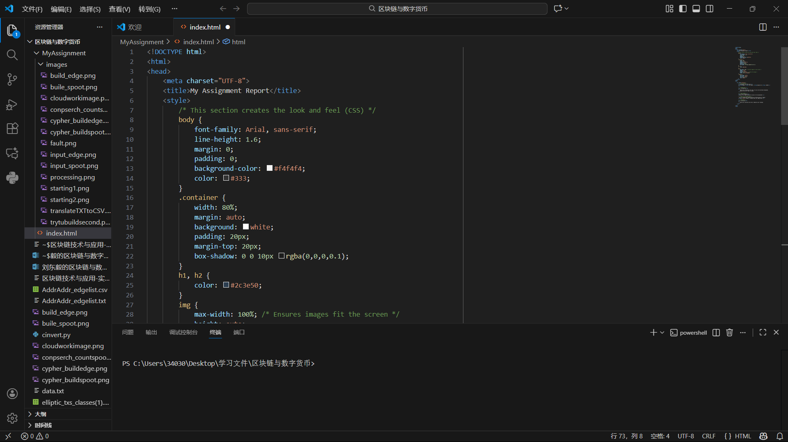以上是我的实验一作业报告。